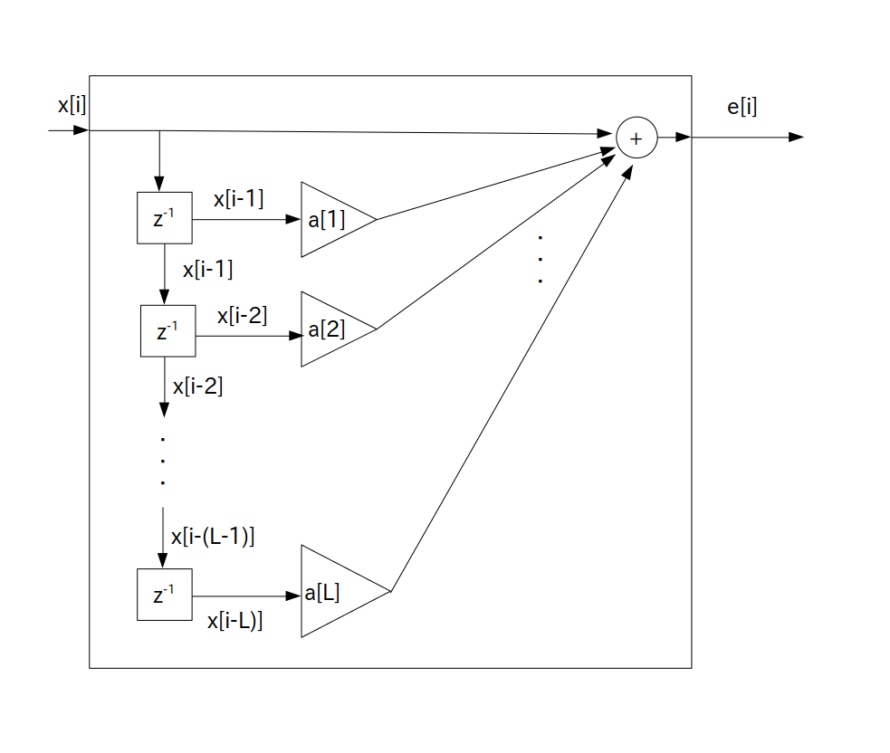

前ページで $x[i]$ の予測値 $\hat{x}[i]$ を求めましたので、次は真の値と予測値の誤差について考えましよう。
その誤差のことを「線形予測誤差」または「線形予測残差」などといいます。
時刻 $i$ における線形予測誤差を記号 $err[i]$ で表すことにすると、$err[i]$ は次の計算式で求められます。
$\textrm{L}$ を正の整数とした時
\begin{align*} err[i] & = x[i] - \hat{x}[i] \\ & = x[i] + \sum_{n=1}^{\textrm{L}} \{ a[n] \cdot x[i-n] \} \} \\ \end{align*}$\hat{x}[i]$ ・・・ $x[i]$ の予測値
$a[n]$ ・・・ LPC 係数(Linear Prediction Coefficient)、または線形予測係数と呼ぶ
前ページの線形予測モデルの式で $\sum$ の前にマイナスが付いていた理由は、上の線形予測誤差の $\sum$ の前をプラスにしたかったためです。
ところでこの線形予測誤差も線形予測モデルと同様に $\textrm{L}$ 次のFIR フィルタの形式になっていて、「(前向き)線形予測誤差フィルタ」または「線形予測器」などと呼ばれています。
この線形予測誤差フィルタは次のブロック図で表されます。
